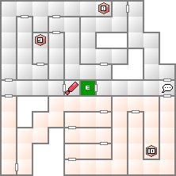

入り口から南側のルートを通ると入手することができる。マッパーを唱えて立ち止まらないように移動しよう。
高い攻撃力とクリティカル率を誇る上に全体攻撃の優れものである。が、ベルゼブブ戦においてはメギドファイアーのほうが役に立つ。主にザコ一掃用となるだろう。
北側に位置する堕天使ムールムールと地霊ムスッペルが出現する宝箱。中身はソーマだが、既に10個所持している場合はもう一度宝箱を調べることで再度悪魔と戦うことが出来る。
これを利用して短時間で多くの戦闘を行い経験値を稼ぐことが可能になる。ベルゼブブを倒してしまった後でもレベルを上げたいのならこれが一番だろう。
会話で仲魔になるくせに、魔神ヴィシュヌや破壊神シヴァに引けを取らない強さを誇る。対ベルゼブブならば、御霊強化を施すまでもないだろう。最強悪魔の候補。
| 能力 | LV99 HP65535 MP9999 力27 知22 魔32 耐30 速21 運13 |
|---|---|
| 特技 | マハ・ジオンガ メギドラオン ハルマゲドン ナイス・ショート |
| デ・カジャ 光る眼 |
| 火炎 | 氷結 | 電撃 | 衝撃 | 破魔 | 呪殺 | 万能 |
|---|---|---|---|---|---|---|
| 精神 | 神経 | 魔力 | 打撃 | 斬撃 | 技 | 銃撃 |
| 100 | 50 | 50 | 50 | 反100 | 反100 | 100 |
| 無効 | 無効 | 無効 | 50 | 50 | 10 | 100 |
常に2回行動に加えてハルマゲドンにメギドラオン。最後のボスだけあって攻撃方法はかなり強烈だが、対策さえできているなら負けることはないだろう。
マハ・ジオンガを食らって感電してしまった場合、高確率でナイス・ショートが飛んできて感電している仲魔は即死してしまうだろう。そうならない為にも電撃を無力化できる仲魔が欲しい。
ベルゼブブより早く動けるマカラカーン所持悪魔でも良いだろう。その場合は所持悪魔が絶対に死なないというのならば電撃対策は必要無くなるだろう。
火炎・銃撃・万能以外はほとんど効果が無い。火炎にしても強力な火炎相性の特技などはくりからの黒龍以外に存在しないので、万能系特技で攻めるのが一番効率的となる。
一応銃撃に弱いので、主人公は暇になったらメギドファイアーを撃ってるのがよい。相手のHPがHPなだけに、少しでもダメージを稼ぎたい。
どうしても勝てない場合はジャッジメントかLAW悪魔の天罰を使ってみよう。前者は4分の3、後者は2分の1まで相手のHPを減らしてくれる。ベルゼブブには抜群の効果を発揮してくれる。

| 天使ケルプ(64) | 妖鳥タイホウ(55) | 妖魔ヴァルキリー(60) |
| 妖精オベロン(58) | 龍王ウロボロス(64) | 魔獣ケルベロス(60) |
| 地霊ムスッペル(67) | 夜魔ニュクス(56) | 堕天使ムールムール(63) |
| 妖鬼ヤクシャ(55) | 鬼女ランダ(59) | 邪神パレス(74) |
| 凶鳥フレスベルク(64) | 死神モト(72) | 魔王ミトラス(80) |
| 魔王ネルガル(73) | 邪龍ヤム(69) |